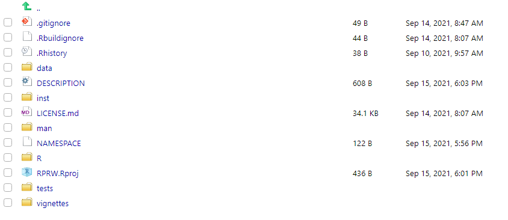
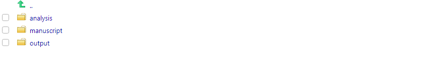

Chapter 2 Making an R Package a Research Compendium
2.1 What is a Research Compendium?
Marwick, Boettiger, and Mullen (2018) state that the goal of a research compendium is to provide a standard and easily recognizable way to organize the digital materials of a project to enable others to inspect, reproduce, and extend the work. Three generic principles define a research compendium:
Files should be organized according to the prevailing conventions of a broader community. This helps members of the community recognize the structure of the project and make tools that utilize the structure.
There should be a clear separation of data, methods, and output. For example, raw data should be kept separate from the code that cleans the data so that others can access the raw data.
The computational environment for the methods should be clearly specified. At the most basic level, this means recording the names and version numbers of software. At the most detailed level, this means completely reproducing the computing environment.
2.1.1 Exercises
- What principles of a research compendium seem most beneficial to you?
2.2 Why a Research Compendium?
Marwick, Boettiger, and Mullen (2018) (and references therein) give several benefits of a research compendium:
- A convenient way to publicly share data and code
- Work with publicly available data sets may receive higher numbers of citations than work with private data sets (note that publicly available data sets also tend to be easier to clear through EPA platforms)
- Data sharing is associated with higher publication productivity
- Of 7,040 NSF and NIH awards studied, the median number of publications associated with each research grant was five when the data were private and 10 when the data were public
- Structured and simplified file management and workflows
- More defense against errors
- Easier to communicate with others (and future you)
2.2.1 Exercises
- Can you identify any benefits to a research compendium that are not already on this list?
2.3 Why an R Package for a Research Compendium?
As previously mentioned, a research compendium requires a specific structure. Earlier in this workshop, we got some experience with something in R that also requires a specific structure…………R packages! A research compendium can significantly benefit from adopting the structure of an R package. Organization is simpler (as you already have a structure), writing and documenting functions and data helps guard against errors in an analysis, and devtools and usethis have several development tools to help ensure your R package performs as intended.
We have previously discussed how to include data in an R package, but many of you may be wondering how we include additional pieces of a research compendium like analysis scripts, output, or a manuscript itself. If the structure of an R package is so rigid – how do these pieces fit? We discuss one such approach next.
2.4 Turning RPRW Into A Research Compendium
If a folder named inst is placed at the root of an R package’s directory, all of the raw contents in inst will be installed upon installation of the R package. This is where we can put the pieces of our research compendium that are not explicitly related to the previous implementation of our R package. We can use this approach to turn RPRW into a research compendium.
Suppose we are using RPRW to supplement a manuscript about rivers. Let’s first add the inst folder – the root of your package’s directory should look similar to

Let’s add three folders to inst:
analysisfor our analysis scripts – these scripts contain code that is not related to the functions in the package but is related to other parts of the research compendium (e.g. generating output for the manuscript)outputfor our analysis outputmanuscriptfor our manuscript 
First we will make an R script to put in analysis. Recall that in Exercise 1.2.7.1.2 (internal link), we generated river_stats(), whose body looks like
river_stats <- function(data, pattern, FUN, ...) {
desired_rivers <- grep(pattern, names(data))
new_data <- data[, desired_rivers]
apply(new_data, 1, FUN, ...)
}river_stats() works like river_means() and river_medians() but takes a general function instead of computing the mean or median specifically. Suppose our goal is to find the minimum length and discharge for rivers whose names contain “C”. Our script to put in analysis will look like
# find some summary statistics on rivers with pattern "C"
## load RPRW -- we need to do this because the script is separate from the
## functions installed in the RPRW package
library(RPRW)
## find minimums
river_min <- river_stats(river, "C", min)
## make a data frame of the minimums
min_df <- data.frame(
data = "river",
pattern = "C",
length_min = river_min[[1]],
discharge_min = river_min[[2]]
)
## write out the minimums (without row names)
write.csv(min_df, "inst/output/min_df", row.names = FALSE)This script loads RPRW and finds the minimum length and discharge for rivers whose names start with C. The script then saves the contents to a CSV file in the output folder. These contents are used when building the manuscript. The manuscript is in the manuscript folder and is a completely reproducible R Markdown document (using an rticles template, which we discuss later). Though we won’t discuss the details of this R Markdown document here unless we have time, the files can be viewed on your machine (after installing RPRW) at the location provided by
A compiled PDF of the manuscript is available here (external link).
2.4.1 Exercises
- There is a folder name within
instthat should be avoided – what is it?
2.4.2 Adding a Citation
Often times your research compendium may be centered around a particular publication. You may build an R package that deals with specific tasks and then write your manuscript using the research compendium structure. In this event, you may want your publication to be easily citable. You can add a citation to your R package research compendium by running
√ Writing 'inst/CITATION'
* Modify 'inst/CITATION'The citation file is placed in the inst folder. It looks a little intimidating at first, but it automatically creates a text version and LaTeX version of your citation with relatively little ease. Here is raw code I used to create the citation in the RPRW package
citHeader("To cite RPRW in publications use:")
citEntry(
entry = "Manual",
title = "Using R Packages for Reproducible Workflows",
author = personList(as.person("Michael Dumelle")),
journal = "EPA 2021 R Workshop",
url = "https://github.com/michaeldumelle/R-Packages-Reproducible-Workflows-Book",
textVersion =
paste(
"Michael Dumelle.",
"(2021).",
"Using R Packages for Reproducible Workflows.",
"EPA 2021 R Workshop.",
"URL https://github.com/michaeldumelle/R-Packages-Reproducible-Workflows-Book."
)
)To view the citation, run
#>
#> To cite RPRW in publications use:
#>
#> Michael Dumelle. (2021). Using R Packages for Reproducible Workflows.
#> EPA 2021 R Workshop. URL
#> https://github.com/michaeldumelle/R-Packages-Reproducible-Workflows-Book.
#>
#> A BibTeX entry for LaTeX users is
#>
#> @Manual{,
#> title = {Using R Packages for Reproducible Workflows},
#> author = {Michael Dumelle},
#> journal = {EPA 2021 R Workshop},
#> url = {https://github.com/michaeldumelle/R-Packages-Reproducible-Workflows-Book},
#> }If left unedited, the package citation defaults to something that looks like
To cite package 'RPRW' in publications use:
Michael Dumelle (2021). RPRW: R Packages for Reproducible Workflows.
R package version 0.0.0.9000.
A BibTeX entry for LaTeX users is
@Manual{,
title = {RPRW: R Packages for Reproducible Workflows},
author = {Michael Dumelle},
year = {2021},
note = {R package version 0.0.0.9000},
}2.5 Research Compendium Recap
The research compendium now visibly contains:
data: a folder containing dataDESCRIPTION: a file containing metadata about our packageinst: a folder containing auxiliary files to be downloaded alongside the package’s installationanalysis: a folder containing R scripts that are separate from the R package but used as part of the research compendiumCITATION: a file containing citation informationmanuscript: a file containing the manuscript and auxiliary filesoutput: a file containing the CSV output
LICENSE.md: a file containing metadata about our license (GPL-3)man: a folder containing R function documentation from the packageNAMESPACE: a file containing exports and importsR: a folder containing R functions from the packageRPRW.Rproj: a file containing R Project metadatatests: a folder containing R function testingvignettes: a folder containing the package vignette
You can also add a README.md file to give a broad overview of your package (README.md is useful whether or not you use Git and GitHub). The README.md file is a Markdown (external link) file (notice the .md extension and notice the connection between R Markdown (.Rmd) and Markdown (.md)) in the RPRW package that looks like
# RPRW
Companion R package for "Using R Packages for Reproducible Workflows" at the 2021 EPA R Workshop
2.7 Hosting Your Research Compendium
You can host your research compendium in an open-access repository so that a broader audience may access it. One approach is to host it on GitHub, which we discuss more later. This approach has the advantage of being easy to install by running
You can also put your research compendium on Zenodo (external link). Zenodo is an open-access repository designed to permanently archive research compendia. GitHub and Zenodo compliment each other nicely: GitHub acts as the “easy to access” version of the research compendium while Zenodo is the more permanent version. For an example of a research compendium that combines these approaches, visit the GitHub repository here (external link) and Zenodo archive here (external link).
2.7.1 Exercises
- Run
?devtools::buildto look at some additional arguments – which seem useful to you?
2.8 An Example R Package Reserach Compendium
A recent publication of mine used this R package research compendium structure – you can view the GitHub repository here (external link).
References
Marwick, Ben, Carl Boettiger, and Lincoln Mullen. 2018. “Packaging Data Analytical Work Reproducibly Using R (and Friends).” The American Statistician 72 (1): 80–88.